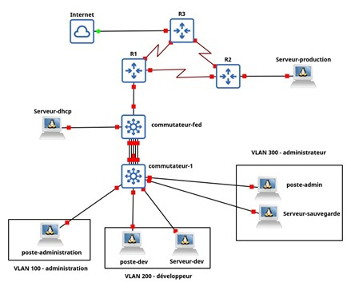
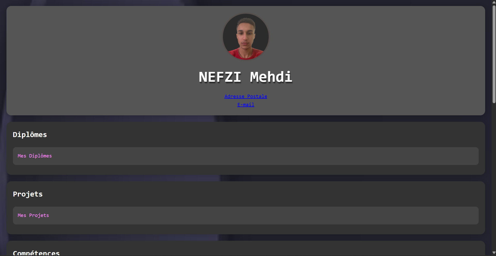
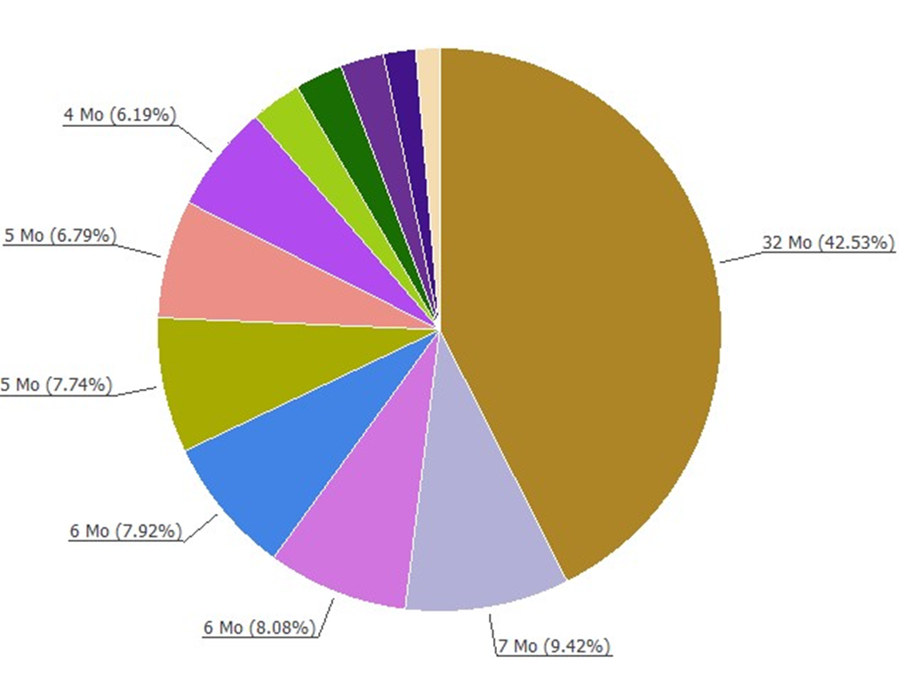

Portfolio - Compétences et Projets BUT Réseaux & Télécom
Réalisé par Mehdi NEFZI
📌 Projet SAE RT12 – Construire un réseau

📋 Fiche 1 : Suivi du projet
- Nom : SAE RT12 – Construction d’un réseau local sécurisé
- Objectifs : Concevoir, segmenter, sécuriser et déployer un réseau local multi-VLAN
- Durée : 4 semaines – Semestre 2
- Technos : GNS3, VLAN, RIP v2, DHCP, FTP, Apache, Rsync, ACL
- Compétences : AC21.01, AC21.02, AC23.04, AC33.06
- Étapes :
- Création VLANs et routage
- IP + services
- Règles de sécurité
- Tests et validation
📆 Fiche 2 : Journal de bord
- Date : 20 mars – 12 avril 2025
- Tâches : VLANs, services, routage, ACL
- Difficultés : Inter-VLAN, Rsync, IP
- Solutions : Tests Wireshark, débogage, veille
- Captures : Config GNS3, ACL, Apache
🧠 Fiche 3 : Synthèse
- Titre : Réseau sécurisé multi-VLAN avec services
- Contexte : Déploiement réseau simulé sous GNS3
- Technos : VLAN, RIP v2, Apache, FTP, ACL
- Compétences : Réseaux, sécurité, documentation
- Déroulement : Topologie → config → tests
- Retour : Projet complet et formateur
📌 Projet SAE Films – Interface de gestion d'une banque de films

📋 Fiche 1 : Suivi du projet
- Nom : SAE Films – Gestion d’une base de données de films avec interface web
- Objectifs : Implémenter une application web complète avec base de données relationnelle et interactions utilisateurs
- Durée : 3 semaines – Semestre 2
- Technos : Django (Python),SQL, HTML/CSS, PostgreSQL,
- Compétences : AC23.02, AC23.05, AC33.01, AC33.04
- Étapes :
- Modélisation des entités : films, acteurs, commentaires, personnes, etc.
- Implémentation du CRUD complet pour toutes les entités
- Ajout d'une page de chargement de films via fichier (format défini)
- Calcul dynamique de la moyenne des notes et mise en avant des meilleurs/pires commentaires
- Génération dynamique d'une fiche film avec casting et commentaires
📆 Fiche 2 : Journal de bord
- Date : Avril – Mai 2025
- Tâches : Création base de données, modèles Django, templates, formulaire de commentaires, système de chargement fichier
- Difficultés : Validation fichier d'import, calculs conditionnels de moyenne
- Solutions : Utilisation de `through models`, gestion des erreurs, vues séparées pour affichages statistiques
- Captures : Interfaces CRUD, formulaire commentaire, page fiche film
🧠 Fiche 3 : Synthèse
- Titre : Gestionnaire de films collaboratif avec avis et casting
- Contexte : Projet web complet orienté base de données avec interactions utilisateur
- Technos : Django, PostgreSQL, HTML/CSS, Bootstrap
- Compétences : Modélisation, développement web, gestion de fichiers, statistiques dynamiques
- Déroulement : Modèle → Interface admin → vues utilisateurs → vues statistiques
- Illustrations : Saisie de commentaire, fiche film avec moyenne, import de fichier
- Retour : Très formateur, allie back-end, base de données, front-end et UX
📌 Projet SAE 104 – Créer son site web personnel (CV en ligne)

📋 Fiche 1 : Suivi du projet
- Nom : SAÉ 104 – Création d’un site web CV personnel
- Objectifs : Présenter son parcours, ses formations, compétences et expériences via un site statique
- Durée : 2 semaines – Semestre 1
- Technos : HTML5, CSS3 (unique feuille de style), ancres, flexbox
- Compétences : AC13.01, AC13.04, AC13.06
- Étapes :
- Structure HTML avec header, sections, footer
- Lien entre pages avec ancres
- Mise en page avec CSS unique
- Insertion d’images, liens, infos personnelles
📆 Fiche 2 : Journal de bord
- Date : Octobre – Novembre 2024
- Tâches : Création des pages HTML, intégration des liens internes, mise en page responsive
- Difficultés : Organisation des liens ancrés entre fichiers, responsive flexbox
- Solutions : Utilisation des ID pour ancres, validation sur navigateur
- Captures : Page d’accueil CV, sections formation/diplôme, flexbox compétences
🧠 Fiche 3 : Synthèse
- Titre : Mon CV en ligne avec HTML/CSS
- Contexte : Apprendre à se présenter sur le web de manière professionnelle
- Technos : HTML, CSS, ancres internes/externe, flexbox
- Compétences : Structuration web, mise en forme CSS, accessibilité
- Déroulement : Maquette papier → structure HTML → CSS final
- Illustrations : Site responsive, lien Google Maps/Mailto, Flexbox dynamique
- Retour : Projet simple mais fondamental pour apprendre les bases du Web
- GitHub : Lien à venir
📌 Projet SAE 105 – Outil de reporting des gros fichiers

📋 Fiche 1 : Suivi du projet
- Nom : SAÉ 105 – Outil graphique de reporting
- Objectifs : Identifier les gros fichiers dans un répertoire
- Durée : 4 semaines – Semestre 1
- Technos : Python, PyQt5, JSON, PowerShell
- Compétences : AC13.02, AC13.03, AC23.02, AC33.06
- Étapes :
- Script d’analyse
- Tri et filtre
- IHM camembert + légendes
- Export JSON + script suppression
📆 Fiche 2 : Journal de bord
- Date : Janvier – Février 2025
- Tâches : Scripts d’analyse, interface, tests
- Difficultés : JSON, chemins Windows/Linux, couleurs aléatoires
- Solutions : pathlib, essais, séparation modules
- Captures : Camembert,
🧠 Fiche 3 : Synthèse
- Titre : Application de visualisation des gros fichiers
- Contexte : Maintenance préventive pour administrateur système
- Technos : PyQt5, JSON, PowerShell
- Compétences : Python, tri, graphique, IHM
- Déroulement : Scripts → IHM → validation
- Retour : Approfondissement Python + IHM + scripting